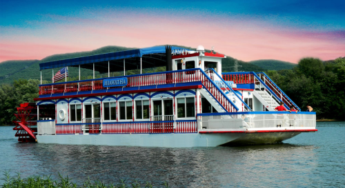
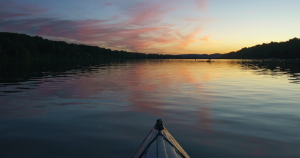

Susquehanna state park is actually in the City of Williamsport, and from downtown is only a couple of minutes away. This state park is actually quite small spanning over 20 acres of river front,
whihc of course anyone could use to do any kind of boating and fishing. Also compared to other state parks this one has no hiking trails instead it has something to offer for anyone to use,
or even to celebrate things on as well.
The hiawatha is placed within the state park where it is a paddle boat that takes up along the stateparks forest land while also just having some fun on the water. Unfourtunately, the Hiawatha is not opened all year round
compared to the state park is self and only runs from spring (April-May) to the fall season (September/October).